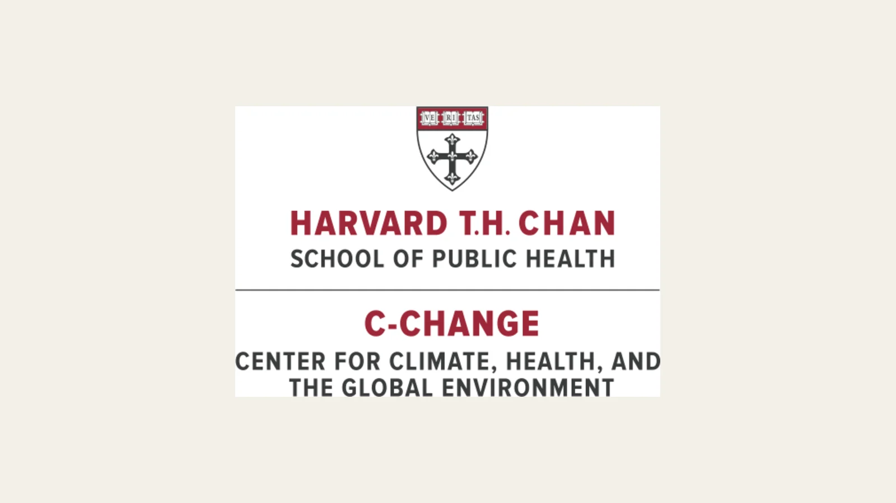

Exploring Youth Climate-Health Education With Harvard C-CHANGE
IRISTEM connected with Harvard C-CHANGE to explore how climate and health research could become accessible youth education.

Connecting climate research and health
Climate topics become more immediate when students can see how environmental conditions connect with human health. IRISTEM met with Skye Flanigan of Harvard C-CHANGE after discussing a model for translating climate-related research, reports, initiatives, and policy priorities into student-friendly explainers and activities.
The conversation explored how a student-led organization could help younger learners approach material that is often written for researchers, health professionals, or policy audiences. IRISTEM described a process that begins with the original source, identifies the central question and evidence, and then builds the background knowledge students need before asking them to interpret or apply the idea.
What IRISTEM proposed
IRISTEM’s contribution to the discussion was a concrete research-translation model. Depending on the source and audience, that model could produce a short explainer, guided reading, visual activity, discussion prompt, or classroom lesson. Each format would retain the connection to the underlying climate-and-health work while giving students a clear task rather than a simplified list of conclusions.
The team also considered how student creators can notice where unfamiliar terms, assumed knowledge, or broad policy language create barriers for younger readers. That perspective can help determine which concepts need examples and which questions can invite students to examine evidence for themselves.
An exploratory conversation
The meeting was an exploration of a potential collaboration, not an announcement of a completed joint curriculum. No final topic, publication, or classroom deliverable is being claimed here. The next steps would depend on selecting appropriate source material, defining the intended learners, and reviewing any educational interpretation for accuracy and useful scope.
For IRISTEM, the conversation helped clarify how its student-led translation process might support climate-health education. For younger learners, the opportunity is to encounter climate research through questions that connect environmental change, health, and community decisions without losing the care those subjects require. IRISTEM will continue approaching that possibility as a research-focused educational effort, with clear distinctions between ideas under discussion and work that has been completed.